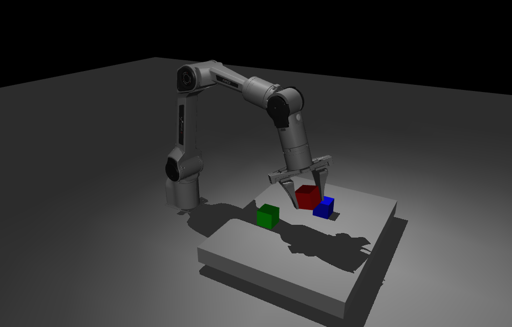

Registered tabletop simulation benchmark
Can PiPER remember a tidy table and restore it?
10/16 changed tables restored · 8/8 tidy tables left alone
Abstract
A single approved overhead image supplies a target arrangement for three coloured cubes. A simulated PiPER restores 10 of 16 changed tables and leaves all eight already-tidy tables alone, including four permitted swaps. Median time to first measured arm motion is 242 ms on an Apple M5. Six multi-move shuffles fail during a right-side grasp approach.
In this paper
We showed a simulated PiPER a tidy table once, changed where the blocks were, and asked it to restore the arrangement. It restored 10 of 16 changed tables and correctly left all eight already-tidy tables alone. Six difficult shuffles exposed the same failure during the approach to a block on the right.

What the robot remembered
Remember this table takes a fresh 320 × 240 RGB observation of a known simulated tabletop. The camera looks straight down. Its calibrated position and a known support height let us turn the visible red, green and blue cube footprints into table coordinates. The saved reference records which zone each object occupies. A user can also mark red and green as interchangeable. That one preference lets the robot accept an arrangement that differs from the reference image.
Tidy this table obtains another image, finds a shortest sequence of single-block moves to an acceptable arrangement, and executes the first move. An empty buffer gives the gripper somewhere to put a block during a swap. A fresh camera check follows each verified move. An incomplete observation or a failed move ends the attempt. All three objects and the arm stay in the same physics scene throughout a run.
Frozen results
We registered 24 cases with fresh offsets up to 4 mm per axis on the same four-zone table. Each fixture ran once, with one local worker and the same controller. Each block was a rigid 40 mm cube with 40 g mass and a simulated sliding friction coefficient of 0.8. The camera, geometry and materials were fixed. “Unseen” here means held-out starting arrangements and sub-zone positions within this setup.
| Starting condition | Whole tables correct | Move calls | First motion, median / p95 |
|---|---|---|---|
| One block in the buffer with its home zone empty | 8/8 | 8 | 214 / 249 ms |
| Shuffle requiring more than one move | 2/8 | 13 | 277 / 316 ms |
| Already tidy, exact home zones | 4/4 | 0 | No motion |
| Already tidy, with red and green exchanged by permission | 4/4 | 0 | No motion |
First arm motion took 242 ms at the median and 307 ms at p95 across all 16 changed tables, including the six failures. On the eight tidy tables the decision to leave the objects alone took 235 ms at the median and 278 ms at p95. All eight issued zero task-control steps. Across the 24 cases there were zero camera declarations of completion rejected by the native scorer. The observed rate applies to these fixtures. All 24 attempts · Machine-readable summary
The clock starts after inputs have been validated in a running local Python process. It includes loading and compiling the scene, settling the blocks, rendering the overhead view, choosing the first move and driving a joint through at least 0.001 rad from its pre-command reading. Asset download, process startup, earlier reference capture and browser transport are outside the measurement. The test used an Apple M5, arm64 Darwin 25.5.0, Python 3.12.9, NumPy 2.5.3 and MuJoCo 3.15.0. These are host wall-clock measurements of simulated motion.
What counted as a placement
PiPER executes an authored, encoder-guided corner grasp with its stock simulated gripper and rate-limited servos. The six arm targets and one jaw target update at 50 Hz. MuJoCo resolves gravity and contacts at 1 ms. Every block has a free joint, so the fingers have to lift and carry its weight through contact.
A move requires at least 100 ms of continuous, bilateral, unsupported lift at least 60 mm above the starting support height. At the destination the scorer requires table support, released fingers, a center within 25 mm of the target zone and within 3 mm of the expected resting height. It checks low linear and angular speeds at 13 consecutive 50 Hz samples and requires the controller to retreat and park. A forbidden contact above 0.01 N fails the run. The planner reads camera observations. The separate scorer reads simulated contacts and motion.
Where the hard shuffles failed
All six failures timed out while descending toward a block in the right zone at (0.40, 0.055) metres. Five stopped at the first requested move. One completed a verified placement before encountering the same approach problem. None reached the gripper-closing phase on that final move. The highest transient block rise was only 2.51–2.57 mm. The evidence localizes the failure to grasp entry. A follow-up should measure tool-pose error and finger clearance at that approach, then test any adjustment on fresh layouts.
This experiment covers a stationary arm with a known camera, three distinguishable rigid objects and four known locations. The reference teaches an arrangement. The motor controller and graph search are authored. Unfamiliar objects, occlusion recovery, other arms and physical manipulation require separate evaluation.
Try the same table locally
Use Python 3.12 in a virtual environment with a working MuJoCo graphics context. Install the tagged release and fetch the pinned open-source PiPER assets once. The simulation then runs locally. The Studio and Terminal read the same saved reference and run records.
python -m pip install 'dvidia-training[arm] @ git+https://github.com/Dvidia-Inference/dvidia-training.git@tidy-table-v0.1'
dvidia-robot-sim fetch piper --output robot-assets
dvidia-train table remember --assets robot-assets --layout left,center,right
dvidia-train table tidy --assets robot-assets --layout center,left,right
dvidia-train table inspect
For the visual workflow, launch dvidia-training-studio --table-assets robot-assets and select Remember and tidy a table in the local Studio. The interactive experiment runs on your computer. Open Skillspace · Get the versioned GitHub release · Download the benchmark on Hugging Face